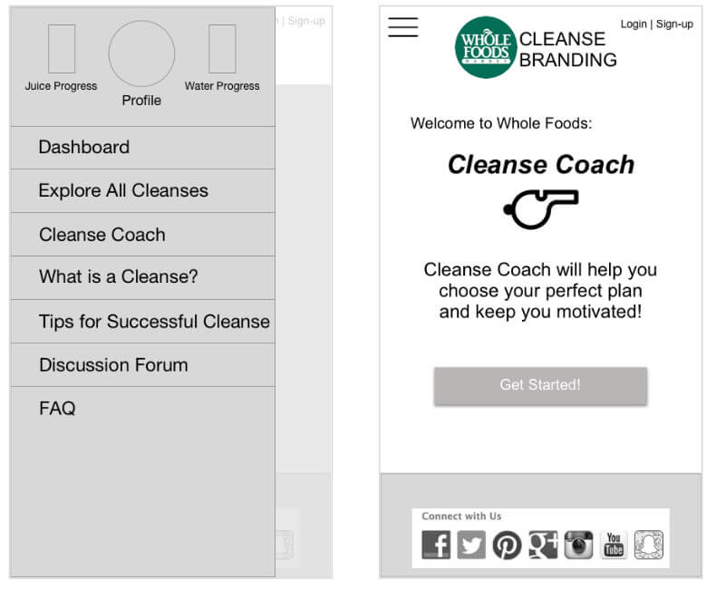
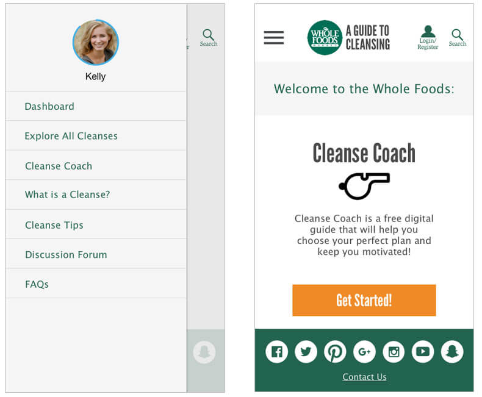
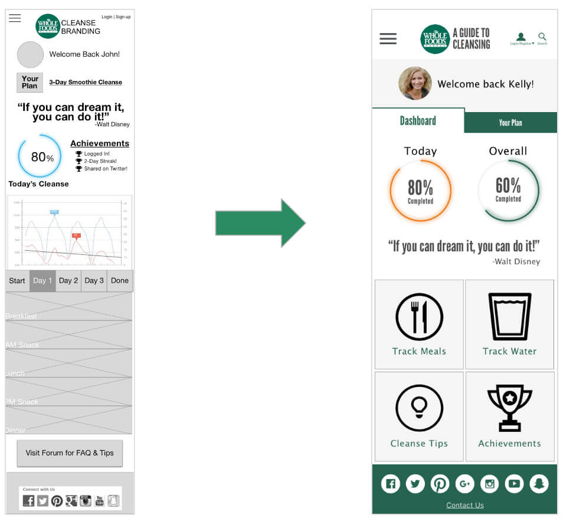
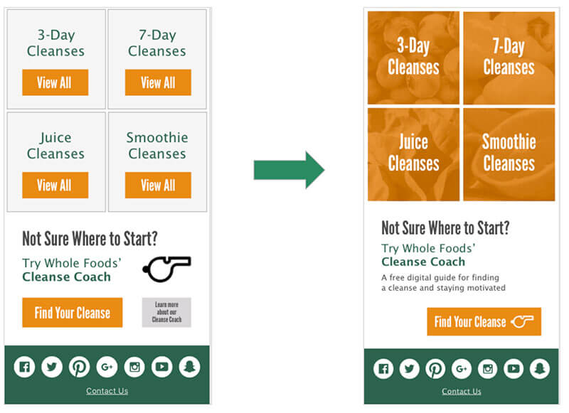
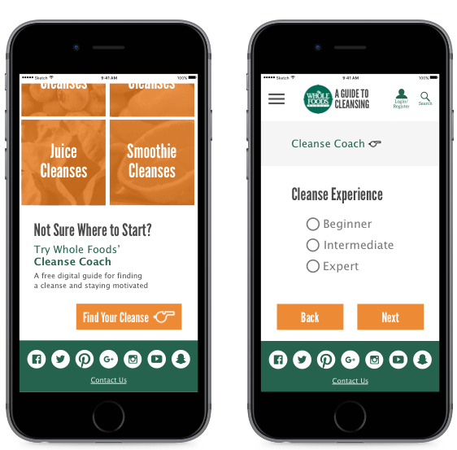
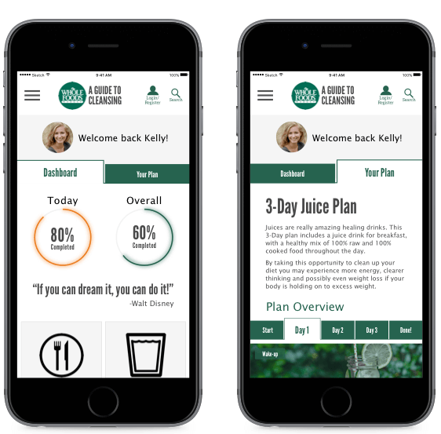

The Problem/Opportunity
Whole Foods wants to engage their Shoppers in a deep and meaningful way outside of the store environment. Their research shows that "embarking on a cleanse" is one of the most common scenarios in which consumers shift from other stores to Whole Foods. Whole Foods wants to take this opportunity to provide a mobile app or mobile-friendly site to support consumers in their cleanse.
The Process
I worked with two other UX Designers on this project. We were extremely collaborative through the entire process, which created an environment where problems were solved and tasks were completed on a timely basis.
I contributed extensively in the initial research, sketching, and mockup phases of this project.
Tools
- Sketch 3
- InVision
- Slack
- Google Drive
Team
- Michelle Valoris
- Matt Hollingsworth
- An Lang
My Contribution
- Mind Map: Brainstorming
- Competitive Analysis
- User Interviews
- Sketching: Design Studio
- High Fidelity Mockups
- Usability Report Editing
1) Research (empathize & define)
Our research consisted of the following UX processes
- Mind Map
- Competitive Analysis
- User Interviews
- Affinity Diagram
Based on the research we established three themes, developed three distinct user types, and defined problem and solution statements.
Our primary themes were:
- Choosing the right cleanse
- Motivation to start and complete the cleanse
- Tracking cleanse progress

2) Ideate
The ideation phase of the project involved sketching, developing low fidelity wireframes and high fidelity mockups.
Our ideation steps were:
- Individual sketching
- Design Studio
- Low Fidelity Wireframes
- Prototype
- Usability Testing
- High Fidelity Wireframes
- Prototype
- Usability Testing
3) Prototype
We developed wireframes and mockups using Sketch 3 and turned both the low fidelity wireframes and high fidelity mockups into prototypes to use for testing with InVision.
View InVision Prototype
 4) Test
We performed two rounds of usability testing with 10 participants.
- Guerilla-style interviews
- In-person user testing
- usabilitytesting.com
We used the testing to inform the overall flow of the site, the "cleanse coach" concept, and the dashboard layout.
 The Solution
We developed a mobile responsive website dedicated to cleansing, that would help users choose the right cleanse, get and stay motivated about cleansing, and track cleanse progress.
Why a Mobile Responsive Site
- A link from the Whole Foods website would provide immediate exposure
- Cost effective and works across platforms and browsers
- Saves the effort of having to download an application
Choosing the Right Cleanse
Users can either browse through cleanses or utilize the helpful Cleanse Coach to determine the right cleanse for their habits and lifestyle.
Motivation and Tracking
The dashboard and plan tracking features were designed to help users stay motivated and on track throughout their cleanse
